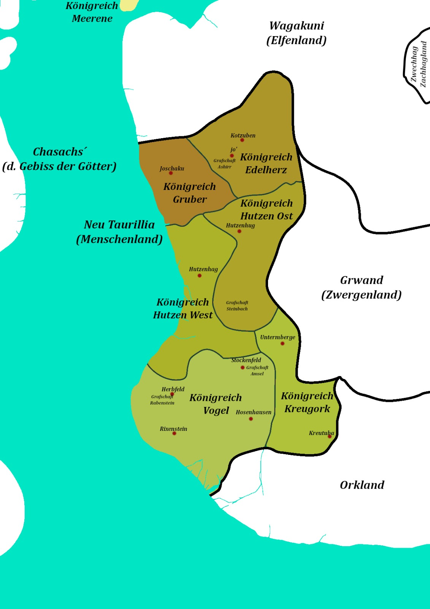

Inaka Pen and Paper
Die zweite Verion von Inaka ist in Arbeit!
Bis INAKA II erscheint schaue Dir gerne nochmal die Version von 2018 an.
Die zweite Verion von Inaka ist in Arbeit!
Bis INAKA II erscheint schaue Dir gerne nochmal die Version von 2018 an.
Die Neue Karte für INAKA II ist in Arbeit. Sie ist noch Work in Progress, aber hier im Hintergrund zu sehen.
Heute habe ich mit meinen Spielern das potentiell erste Abenteuer für INAKA II gespielt. Es trägt vorraussichtlich den Titel Veitstanz und eignet sich gut als Einsteigerabenteuer.
Heute habe ich das Dokument aufgesetzt, welches das INAKA II Hauptbuch werden wird.
Die Länder Inakas haben jetzt Namen! Nach langer Zeit, in der sie nur 'Menschen-Land', 'Zwergen-Land', 'Elfen-Land' und so weiter hießen, gibt es jetzt Namen.
Menschen-Land → Neu Taurillia
Elfen-Land → Wagakuni
Zwergen-Land → Grwand
Zachhag-Land → Zwechhag
Und das Orkland bleibt das Orkland.
Außerdem wurde Neu Taurillia in Königreiche aufgeteilt, in denen es auch einige benannte Grafschaften gibt.
Dazu gibt es auch eine neue politische Karte:
